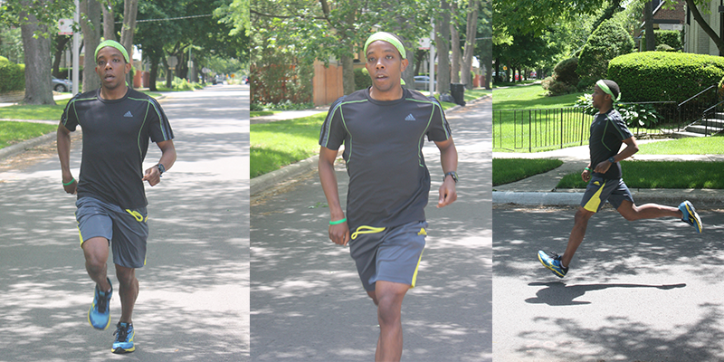

Greetings!
Thank you for visiting my Fundraising page! Make yourself at home as I post weekly updates, photos and more as I continue on this 18-week journey.
For those of you who don’t know me, my name is Colin Rouser and I was born and raised in the wonderful city of Chicago, IL. Ever since I was a little kid, I always wanted to be like my dad. Now, I finally get to fulfill one of my childhood dreams of being just like him:
I am running 26.2 miles this October in the 2014 Bank of America Chicago Marathon. I am more than excited and nervous to take on this challenge, but it is something I’ve wanted to do since I was 10 years old, and on top of that I am more than blessed with the opportunity to do it for a great cause.
I’m running the 2014 Chicago Marathon to support Mission of Our Lady of the Angels- a Catholic outreach to the poor in West Humboldt Park, one of the worst neighborhoods in Chicago. The high schools in West Humboldt Park have a 67% drop out rate, 97% of kids qualify for free or reduced lunch, and 42% of the adult population is unemployed. The need is clearly great.
The Mission addresses these needs through the eyes of faith. The Mission feeds about 700 families a month, supports about 900 youth a month in afterschool programming (in a partnership with the YMCA and the Greater Chicago Food Depository), has a community group for senior citizens, host bi-weekly community dinners to help rebuild the broken families in our neighborhood, and, most importantly, provides a prayer presence in the face of violence and poverty.
To find out more about the Mission, please visit their website here: Missionola.com
I am committed to train (running over 500 miles) over the long, hot summer and run 26.2 miles on Marathon Sunday (October 12) . . . along with 60+ other runners to help finance the needs of the Church. I would appreciate all your prayers to help me persevere through my training and finish the race.
Finally, I need your financial support. The Mission is able to provide all of its services to its neighbors for free because of many generous donations from people like you. After recently completing a gigantic capital campaign, the Mission is working on better establishing its programming in the neighborhood, and needs your help to do that.
I set up this page to make it easier to follow my training progress and enjoy some of the stories and adventures I have along the way. And if you are able to donate, please visit my donation page; you will find instructions on how to donate and special offers. Any and all help you can provide is more than appreciated.
Thank you, God Bless you, and Wish Me Luck!
-CSR